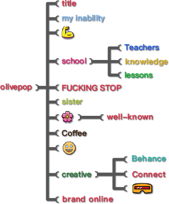

#title#
#school#
starts.. Because of their annoyance and#my inability#
to find a way to say "please do us all a favor and “FUCKING STOP” nicely I held in all my rage and ended up yelling at my#sister#
#中文#
写#还好#
通过CSS3的transition#模仿制作#
jQuery的slideshow效果， 当然这种效果跟js和jQ制作出来的是没得比，但有时还是可以用一用的，以前腾讯就使用过这样的一个效果。著作权归作者所有。 “如何在#画展#
上表现自然？” “怎么看画才好像自己看懂了？” 每逢大展，大家的关注点就如此的一致。 “伦勃朗和他的时代”展览亮相国家博物馆，这消息提前几个月就刷爆了大家的朋友圈， 这是荷兰黄金时代画作在中#title#
#school#
starts.. Because of their annoyance and#my inability#
to find a way to say "please do us all a favor and “FUCKING STOP” nicely I held in all my rage and ended up yelling at my#sister#
#title#
#school#
starts.. Because of their annoyance and#my inability#
to find a way to say "please do us all a favor and “FUCKING STOP” nicely I held in all my rage and ended up yelling at my#sister#